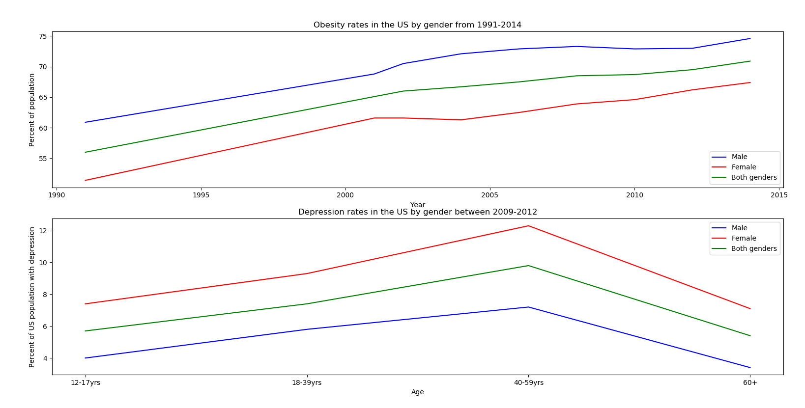
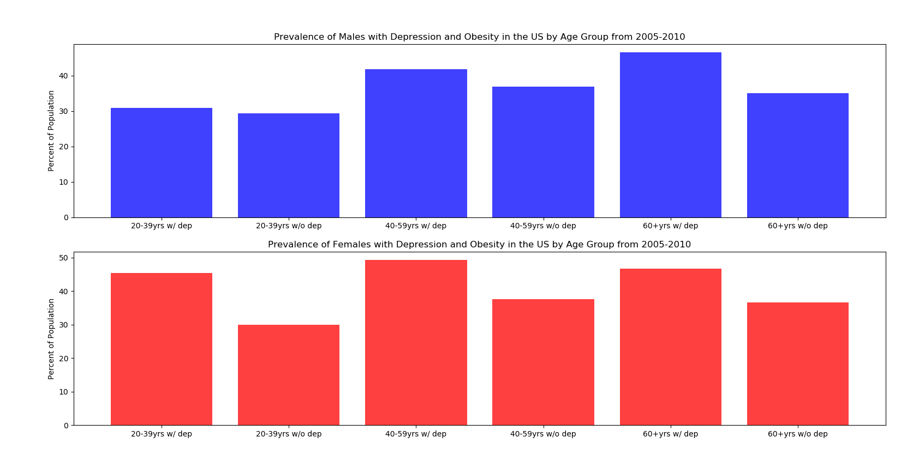

GRAPHS
Figure 1 shows obesity and depression rates over time for adults.

obesity_and_depression_linegraphs
Figure 2 shows the prevalence of any mental health disorder in 2016 by gender and various age groups

bar_graph_mental_health
Figure 3 shows the prevalence of people with both obesity and depression by age group and gender

depression_and_obesity_graphs